E-5. PR #13: usa la plantilla (resumen, Closes #14, #15, #17 y DoD) pero se integró sin revisores («No reviews») y con el Quality Gate de SonarCloud en rojo (dominios 3 y 4).
Objetivo. Evaluar y mejorar el proceso de gestión de la configuración (SCM) del proyecto con el ciclo PDCA, usando como evidencia el propio repositorio en la suite gratuita de GitHub (Issues, Pull requests, reglas de rama, Actions, Releases) y la salida de comandos git y gh. El alcance son las cuatro áreas de la Unidad IV: administración del cambio, gestión de versiones y entregas, construcción del sistema y herramientas del proceso. Cada hallazgo y verificación remite a una evidencia E-n del anexo.
CONTRIBUTING.md, en la regla de rama o en un flujo automático.El 06/11/2026 el equipo introdujo los controles de la Unidad IV (plantillas de RFC y de PR, CONTRIBUTING.md, rama develop, cinco releases). La auditoría del 14/11 (tarde) identificó brechas que fueron atendidas con acciones correctivas esa misma noche (14/11, noche). La tabla compara el proceso en los tres momentos. Todos los valores salen del repositorio: los del corte de la tarde se reproducen con entregables/semana-13/laboratorio-scm/evidencias/antes_2026-11-14_tarde/salidas_cli.json y los de la noche con entregables/semana-13/laboratorio-scm/evidencias/salidas_cli.json.
| Indicador del proceso SCM | Antes del 06/11/2026 | 06/11 al 14/11 (tarde) | Al 14/11 (noche) | Meta Sprint 6 (23/11) | Cómo se mide · evidencia |
|---|---|---|---|---|---|
Integraciones en main que entraron por pull request | 9 / 19 (47 %) | 9 / 9 (100 %) | 9 / 9 (100 %) | 100 % | Historial de primer padre de main · E-6, E-7 |
Commits con formato convencional tipo(ámbito): descripción | 13 / 60 (22 %) | 20 / 24 (83 %) | 9 / 11 (82 %)* | ≥ 95 % | git log --all --no-merges · E-7 |
| Cambios registrados como solicitud de cambio (RFC) en Issues | 0 | 7 RFC (#14 a #20) | 7 RFC (#14 a #20) | 1 RFC por cambio | gh issue list --label change-request · E-1, E-2 |
RFC evaluadas (etiqueta aprobado o implementado) | — | 0 / 7 (0 %) | 6 / 6 (100 %)** | 100 % | Etiquetas de cada RFC · E-1, E-18 |
PR integradas vinculadas a su RFC (Closes #n) | 0 / 10 | 1 / 9 (11 %) | 1 / 11 (9 %) | 100 % | Cuerpo de cada PR · E-3, E-5, E-19 |
| PR integradas con revisión «Approved» de un par | 1 / 10 (10 %) | 0 / 9 (0 %) | 0 / 11 (0 %) | 100 % | reviewDecision de cada PR · E-3, E-19 |
Rama main protegida por regla | No | No (ruleset desactivado) | Sí (ruleset activo en main y develop) | Sí, main y develop | API rulesets y ramas (protected: true) · E-4, E-16, E-17 |
PR integradas a través de develop | 0 (solo local en PMV) | 0 (5 commits detrás) | 2 PR (#28 y #29); 0 detrás / 2 delante | Todas las del INC-5 | git rev-list --left-right --count · E-8, E-19, E-20 |
Ejecuciones de main con el trabajo de calidad en verde | — | 7 / 7 (09 a 13/11) | 7 / 7 (100 %) | 100 % | gh run view · E-11, E-12 |
Ejecuciones de main con el despliegue en verde | — | 1 / 7 (14 %) | 1 / 7 (14 %) | 100 % | Trabajo produccion · E-12 |
| Releases con notas / con artefactos adjuntos | 0 / 0 | 5 con notas / 0 con artefactos | 6 con notas / 2 con artefactos | Artefacto en cada release | API de releases · E-15, E-20, E-21 |
* La columna de la tarde (20/24 y 13/60) es la medición oficial del hallazgo. Tras la limpieza de 17 ramas remotas, git log --all ya no incluye los commits de esas ramas y la salida de la noche da 9/11 (82 %) desde el 06/11 y 13/53 (25 %) antes de esa fecha.
** 6 de 6 evaluadas sin contar la RFC #16 (duplicado cerrado): 3 aprobadas (#18, #19, #20) por el Leader y 3 implementadas (#14, #15, #17).
Lectura. Los controles del 06/11 consolidaron las PR y la convención de commits en main. Las acciones nocturnas del 14/11 cerraron los principales huecos de control formal: el ruleset ownermerge quedó activo para main y develop (con excepción de administrador para contingencias), las 6 RFC válidas fueron evaluadas formalmente (3 aprobadas y 3 implementadas), se sincronizó develop (PR #28) y se integró T-024 (PR #29) por develop, se eliminaron 17 ramas remotas respaldando docs/s12-correcciones en una etiqueta, y se publicó v4.0.1 con artefactos adjuntos junto a v4.0-Inc4. El punto pendiente clave sigue siendo la revisión por pares: las PR #28 y #29 se integraron usando la excepción de administrador sin aprobación formal de un par (0 de 11 post-06/11); el ruleset ahora lo exige como política del repositorio.
| N.° | Dominio del proceso SCM | PLANHallazgo identificado (evidencia) | DOAcción a tomar / tomada | Responsable | Fecha de acción | CHECK¿Cómo se verificará? | ACTEstandarización o mejora futura | Fecha de solución · estado |
|---|---|---|---|---|---|---|---|---|
| 1 | Identificación de los elementos de configuración | Software, documentos y herramientas convivían en la raíz del repositorio. El pipeline no distinguía: cada PR que no tocaba el software ejecutaba pruebas, imagen Docker y despliegue.E-13 (disparadores sin filtro de rutas) | Reorganizar el repositorio por semanas (T-024): software en pmv_fastapi/, entregables en entregables/semana-XX/, coordinación en .claude/; filtro paths en ci.yml. |
Porras V. (Leader) | 14/11/2026 | PR #29 (chore/reorganizar-por-semanas) integrada en develop; filtro de rutas operativo en develop y llegará a main con la siguiente release. |
Mapa de rutas (RUTAS.md) como registro de los elementos de configuración, actualizado con cada ruta nueva. |
14/11/2026 Verificado |
| 2 | Registro de las solicitudes de cambio | La plantilla RFC funciona (7 RFC desde el 06/11), pero cambios como la optimización de Render (PR #22), el video (PR #25) y la sincronización (PR #28) entraron sin RFC.E-1, E-2, E-3 | Registrar como RFC los cambios en curso (restauración del despliegue en Render, dataset Inc-5) y exigir Closes #n en toda PR que modifique código o flujos. |
Huamani R. (QA Lead) | 17/11/2026 | Auditoría de PR: porcentaje de PR integradas con RFC vinculada (E-3) = 100 % en el Sprint 6. | Flujo de GitHub Actions que marque en rojo la PR cuyo cuerpo no contenga Closes #n. |
— Abierto |
| 3 | Evaluación y aprobación del cambio | Al corte de la tarde las 7 RFC seguían en pendiente-evaluacion; las RFC #14, #15 y #17 se habían cerrado por PR #13 sin registrar la aprobación.E-1, E-5 |
El Leader evaluó las RFC abiertas (#18, #19, #20) con etiqueta aprobado y actualizó las cerradas (#14, #15, #17) a implementado (#16 permanece como duplicado cerrado). |
Porras V. (Leader / CCB) | 14/11/2026 | gh issue list --label change-request muestra 6 de 6 RFC evaluadas (3 aprobadas, 3 implementadas, 1 duplicado); E-18. |
Regla en CONTRIBUTING.md: sin etiqueta aprobado del Leader/CCB no se crea la rama de trabajo. |
14/11/2026 Verificado |
| 4 | Revisión de código por pares | Solo 1 de 19 PR integradas al corte de la tarde tiene «Approved» (PR #9); ninguna posterior al 06/11 (en la auditoría de la noche, 1 de 21). Las PR #28 y #29 se integraron con la excepción de administrador sin aprobación de par.E-3, E-5, E-19 | Asignar revisor cruzado obligatorio en cada PR: Huamani R. revisa las de Porras V. y Auqui H.; Porras V. revisa las de Huamani R., usando «Approve» en Files changed. | Huamani R. (QA Lead) | 17/11/2026 | Indicador «PR con revisión Approved» (E-3, E-19) = 100 % de las PR del Sprint 6 sin invocar bypass. | El ruleset activo (dominio 5) exige 1 aprobación; la excepción solo se reserva para emergencias justificadas. | — Abierto |
| 5 | Protección de la línea base | El ruleset ownermerge estaba desactivado (14/11 tarde); la API informaba main desprotegida.E-4 |
Activar el ruleset ownermerge para main y refs/heads/develop (PR obligatoria, 1 aprobación, sin borrado ni force push; bypass solo para Repository admin id 5). |
Porras V. (propietario) | 14/11/2026 | API de rulesets devuelve enforcement: active y la rama main devuelve protected: true; panel Settings muestra ruleset activo (E-16, E-17). |
Configuración documentada en CONTRIBUTING.md y verificada periódicamente con auditoría CLI. |
14/11/2026 Verificado |
| 6 | Integración por pull request | Antes del 06/11 la mitad de las integraciones en main eran commits directos.E-6, E-7 |
Desde el 06/11 todo cambio entra por PR con plantilla de DoD (PR #12, #13, #21 a #27 en main; #28 y #29 en develop). |
Todo el equipo | 06/11/2026 | Historial de primer padre: 9 de 9 integraciones en main y 2 de 2 en develop llevan PR. |
El ruleset activo (dominio 5) bloquea push directos y fuerza PR. | 14/11/2026 Verificado |
| 7 | Estrategia de ramificación (GitFlow) | GitFlow se perdió desde el Inc. 2: develop quedó 5 commits detrás de main con 0 PR; había 17 ramas remotas antiguas sin limpiar.E-8, E-9, E-10 |
Sincronizar develop con main (PR #28); integrar T-024 a develop (PR #29); crear etiqueta de respaldo archivo/docs-s12-correcciones y borrar 17 ramas remotas. |
Porras V. y Auqui H. | 14/11/2026 | develop está 0 detrás / 2 delante de main; en remoto solo existen main y develop (E-19, E-20). |
Flujo GitFlow estandarizado en CONTRIBUTING.md para todo el Sprint 6 e Incremento 5. |
14/11/2026 Verificado |
| 8 | Convención de commits | Antes del 06/11 solo el 22 % de commits seguía la convención (13/60); mensajes como «Inc. 3 completo…» impedían notas automáticas.E-7 | Convención escrita en CONTRIBUTING.md (PR #13) y aplicada en títulos de PR y commits semánticos. |
Huamani R. (QA Lead) | 06/11/2026 | Indicador: 83 % (20/24) desde el 06/11 al corte del hallazgo; 82 % (9/11) tras limpieza de ramas (E-7). | Linter de títulos de PR en Actions para garantizar ≥ 95 % en el Sprint 6. | 14/11/2026 Verificado |
| 9 | Construcción del sistema e integración continua | El pipeline valida calidad, pero PR #6 y #7 se integraron con CI rojo; PR #29 falló inicialmente por Ruff y SonarCloud marcó duplicación (4,4 %).E-11, E-12, E-13 | En PR #29 se corrigió formato Ruff en importador_diresa/config.py (commit style(T-024)) pasando a verde antes de integrar. Los avisos de «Node.js 20 está obsoleto» del CI se refieren al entorno de ejecución de GitHub Actions (forzado a Node.js 24), no al proyecto, que usa Python. |
Auqui H. | 14/11/2026 | Ejecución de PR #29 verde antes del merge (run 43675249154); ejecuciones de main con calidad verde 7/7 (E-12). |
Regla de estado obligatorio en GitHub Actions cuando la PR toque pmv_fastapi/. |
14/11/2026 Verificado |
| 10 | Despliegue y entrega continua | Desde el 09/11, 6 de 7 ejecuciones en main fallan en produccion por servicio suspendido en Render; además Render despliega con Auto-Deploy en paralelo.E-11, E-12 |
Reanudar servicio en Render, desactivar Auto-Deploy para que solo despliegue el CI y reejecutar el trabajo produccion. |
Porras V. (Leader) | 14/11/2026 | Próxima ejecución de main termina en verde en produccion; /api/salud responde versión desplegada. |
Notificación de fallo del despliegue al canal del equipo; despliegue exclusivo desde CI. | — En proceso |
| 11 | Gestión de versiones y entregas | Al corte de la tarde había 5 releases con 0 artefactos adjuntos y el hotfix de la PR #22 (e6d8c4c) no tenía versión semántica.E-14, E-15 |
Publicada release v4.0.1 (hotfix de PR #22) con reportes-calidad-v4.0.1.zip (690 pruebas, 99,46 % cobertura); adjuntado reportes-calidad-v4.0-Inc4.zip (660 pruebas, 99,88 % de líneas; 99,79 % con ramas) a v4.0-Inc4. Falta publicar imagen Docker. |
Huamani R. (QA Lead) | 14/11/2026 | API de releases muestra 6 releases, 2 con artefactos adjuntos (E-20, E-21); gh release list muestra v4.0.1 Latest. |
Publicar la imagen en GitHub Container Registry en cada release sobre main y adjuntar zip de reportes. |
— En proceso |
| 12 | Auditoría de la configuración | Auditoría previa manual y dispersa sin trazabilidad reproducible.E-1 a E-15 | Script capturar_evidencias_scm.py: 34 evidencias de GitHub y terminal regeneradas tras acciones nocturnas; salidas en salidas_cli.json. |
Huamani R. (QA Lead) | 14/11/2026 | Script ejecutado exitosamente; reproduce todos los indicadores y genera salidas CLI verificadas. | Auditoría automatizada al cierre de cada sprint integrada con el registro de seguimiento PDCA. | 14/11/2026 Verificado |
| Fecha de revisión | Responsable de la revisión | Hallazgos pendientes | Hallazgos verificados o cerrados | Observaciones |
|---|---|---|---|---|
| 06/11/2026 | Huamani R. (QA Lead) | — | — | Línea base del proceso: plantillas de RFC y de PR, CONTRIBUTING.md, rama develop, 7 RFC y 5 releases (PR #13). |
| 14/11/2026 (tarde) | Huamani R. (QA Lead) y Porras V. (Leader) | 9 (5 abiertos, 4 en proceso) | 3 verificados (6, 8, 9) y el 12 creado en esta revisión | Primera auditoría reproducible. Hallazgos: despliegue en rojo desde el 09/11 (10), RFC sin evaluar (3), PR sin RFC (2), ruleset desactivado (5), releases sin artefactos (11). |
| 14/11/2026 (noche) | Huamani R. (QA Lead) y Porras V. (Leader) | 4 (2 abiertos: 2, 4; 2 en proceso: 10, 11) | 8 verificados (1, 3, 5, 6, 7, 8, 9, 12; 0 cerrados) | Acciones nocturnas del 14/11: ruleset ownermerge activo en main y develop (5), 6 RFC evaluadas (3), develop sincronizada con PR #28 y T-024 integrado por PR #29 (7, 1), 17 ramas remotas borradas con etiqueta de respaldo, release v4.0.1 publicada y artefactos adjuntos en 2 releases (11). Pendiente: revisión por pares sin bypass (4) y reanudar deploy en Render (10). |
| 18/11/2026 | Huamani R. (QA Lead) y Porras V. (Leader) | ______ | ______ | Prevista: reanudar deploy Render (10), publicar imagen Docker en releases (11) y primera PR con revisión por pares aprobada (4). |
| 23/11/2026 | Todo el equipo | ______ | ______ | Prevista: cierre del Sprint 6; auditoría de cierre y comparación con sección 1. |
| Estado | Descripción |
|---|---|
| Abierto | Hallazgo identificado; la acción aún no se inicia o no se ha completado un ciclo formal (dominios 2 y 4). |
| En proceso | La acción se está ejecutando (dominios 10 y 11: reanudación de Render y publicación de imágenes Docker). |
| Verificado | La evidencia del repositorio demuestra que la acción se realizó con evidencias contrastadas (dominios 1, 3, 5, 6, 7, 8, 9 y 12). |
| Cerrado | Hallazgo solucionado y estandarizado en una regla o flujo automático. Ninguno al 14/11/2026 (noche): los estándares requieren un ciclo completo con aprobación de pares y despliegue sin bypass. |
Adaptación declarada: los cuatro estados y su significado son los de la guía (Abierto, En proceso, Verificado, Cerrado). El equipo precisó las descripciones: «Abierto» incluye la acción que aún no completó un ciclo formal, «Verificado» exige evidencia contrastada del repositorio y «Cerrado» exige además que la mejora quede estandarizada en una regla o flujo automático.
Capturas de las páginas públicas del repositorio y salidas reales de git y gh, generadas el 14/11/2026 por capturar_evidencias_scm.py. Las evidencias que prueban el hallazgo apuntan a antes_2026-11-14_tarde/; las que prueban la acción o verificación apuntan a la versión nueva.
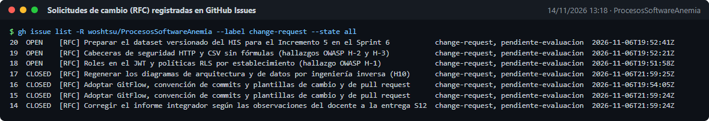
E-1. Las siete solicitudes de cambio (RFC) registradas con la plantilla al corte de la tarde (14/11, 13:10); todas conservaban la etiqueta pendiente-evaluacion, incluidas las cuatro cerradas (dominios 2 y 3).
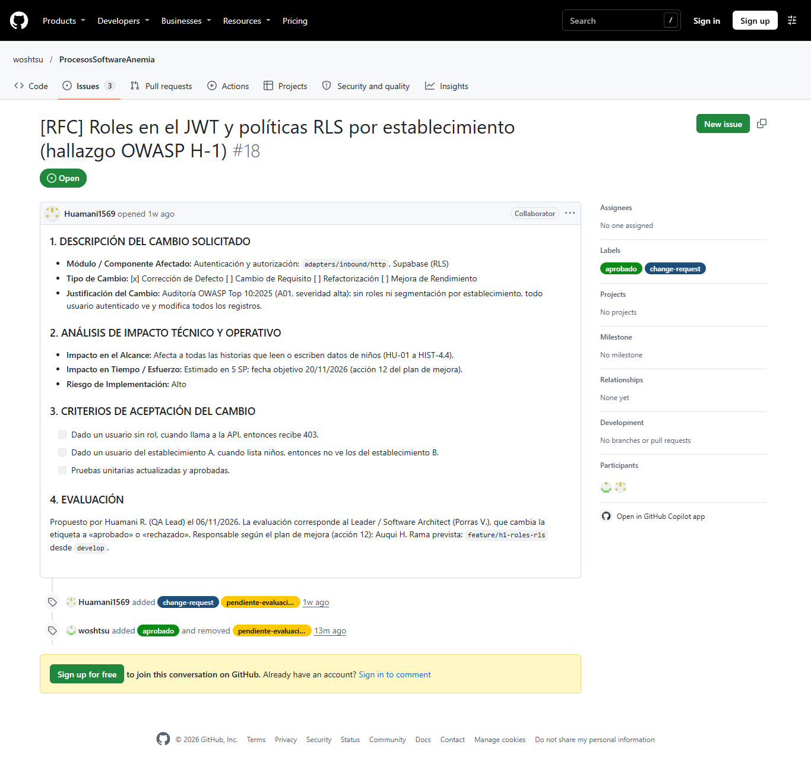
E-2. RFC #18 en GitHub Issues: módulo, tipo, impacto y criterios de aceptación; sin rama ni PR asociada (sección Development) (dominio 2).
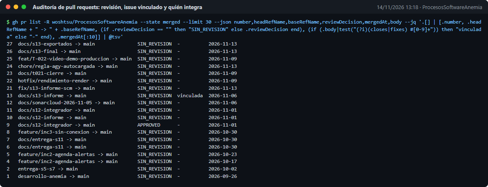
E-3. Auditoría de las 19 PR integradas al corte de la tarde: solo la #9 tiene «APPROVED» y solo la #13 está vinculada a una RFC (dominios 2 y 4).
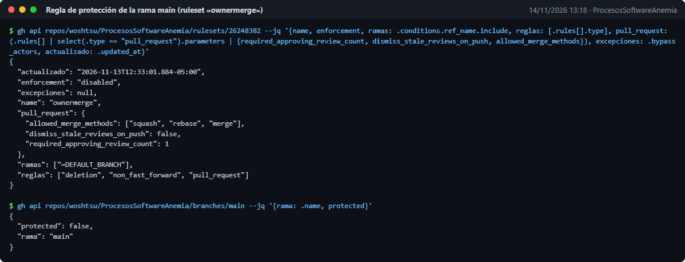
E-4. Ruleset ownermerge sobre la rama por defecto al corte de la tarde: enforcement: disabled y rama main no protegida (dominio 5).
E-5. PR #13: usa la plantilla (resumen, Closes #14, #15, #17 y DoD) pero se integró sin revisores («No reviews») y con el Quality Gate de SonarCloud en rojo (dominios 3 y 4).

E-6. Historial de primer padre de main: desde el 06/11 cada integración lleva número de PR; antes aparecen commits directos como «Capturas de produccion» o «Subiendo a produccion» (dominios 5 y 6).
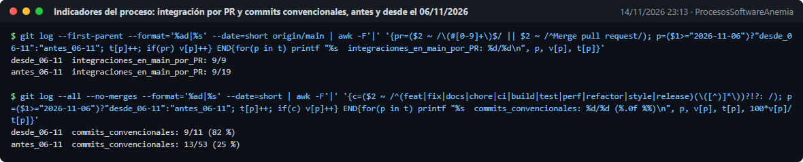
E-7. Indicadores calculados con git log: integraciones por PR (9/19 → 9/9) y commits convencionales (22 % → 83 %) (dominios 6 y 8).
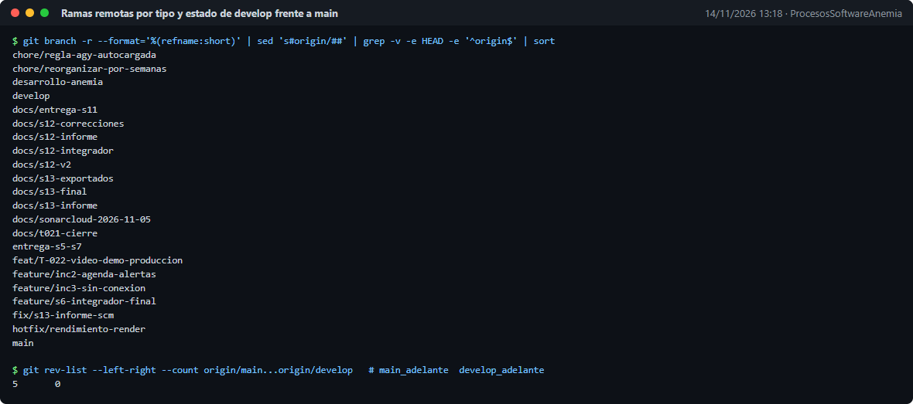
E-8. Ramas remotas al corte de la tarde: prefijos mezclados (22 ramas) y develop 5 commits detrás de main (dominio 7).

E-9. Gráfico de red (Insights → Network): main como línea base y ramas de trabajo históricas derivándose de ella. Se actualiza una vez al día en los servidores de GitHub y aún muestra ramas borradas (dominio 7).
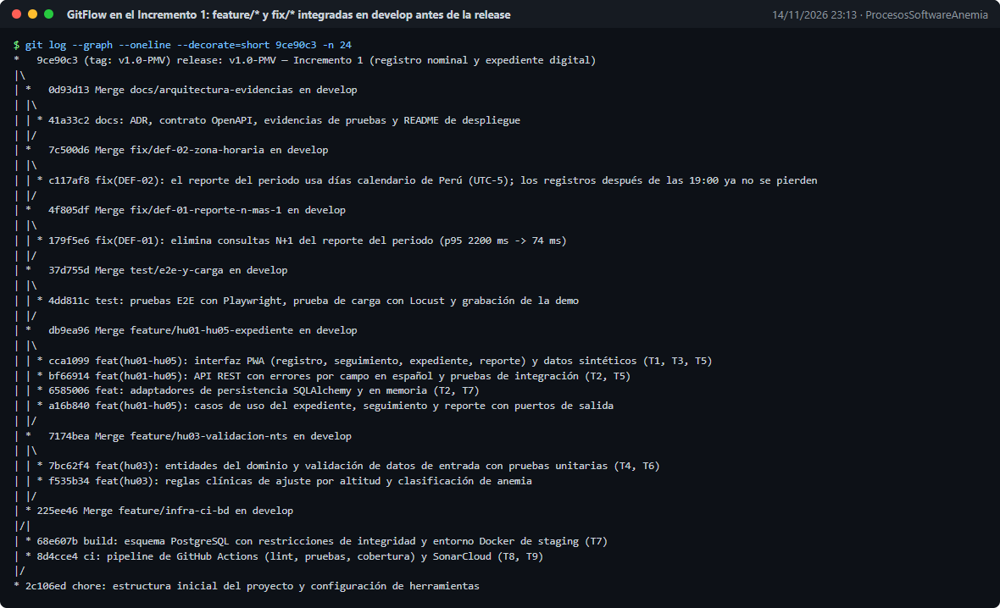
E-10. El Incremento 1 sí siguió GitFlow: ramas feature/*, fix/*, test/* y docs/* integradas en develop antes de release: v1.0-PMV (dominio 7).

E-11. Ejecuciones de GitHub Actions: las PR terminan en verde y los push a main en rojo desde el 09/11 (dominios 9 y 10).
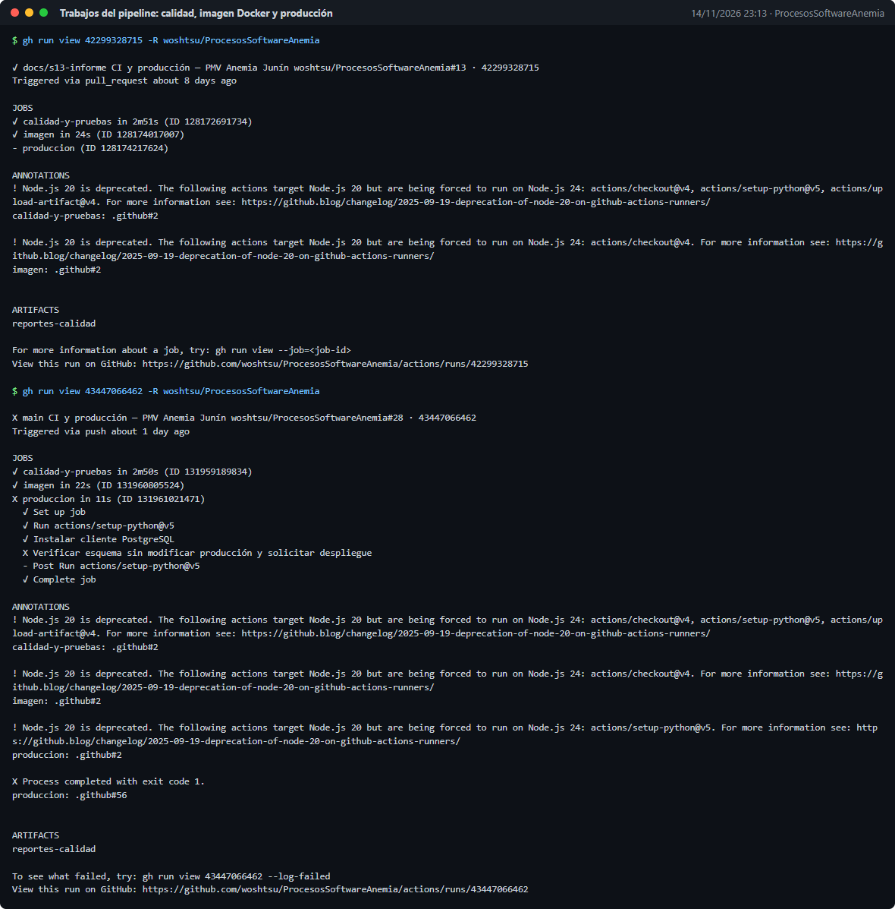
E-12. Detalle de dos ejecuciones: en la de la PR #13 los trabajos de calidad e imagen pasan y producción se omite; en la de main del 13/11 calidad e imagen pasan y falla el paso que solicita el despliegue (dominios 9 y 10).

E-13. ci.yml en main: disparadores sin filtro de rutas al corte de la tarde, encadenando calidad-y-pruebas → imagen → produccion (dominios 1 y 9).

E-14. Etiquetas anotadas por incremento con su descripción, incluyendo la nueva v4.0.1 y el tag archivo/docs-s12-correcciones (dominio 11).

E-15. Las cinco releases publicadas el 06/11/2026, todas con 0 artefactos adjuntos al corte de la tarde (dominio 11).
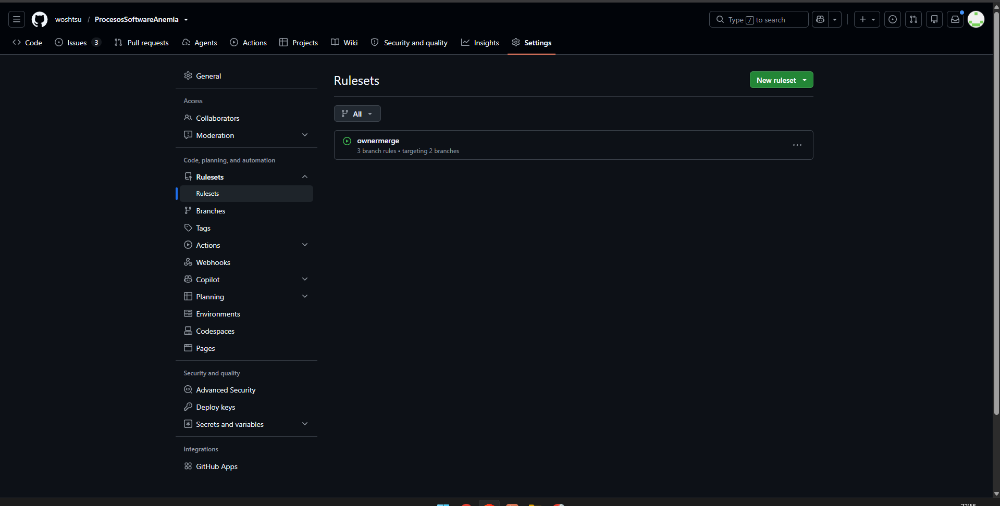
E-16. Panel Settings → Rulesets del propietario (14/11, 22:56): ruleset ownermerge activo (Active), 3 branch rules, targeting 2 branches (main y develop) y excepción para Repository admin (dominio 5).

E-17. API de GitHub tras activación nocturna: ruleset enforcement: active sobre ~DEFAULT_BRANCH y refs/heads/develop, excepción admin id 5 y protected: true en main (dominio 5).
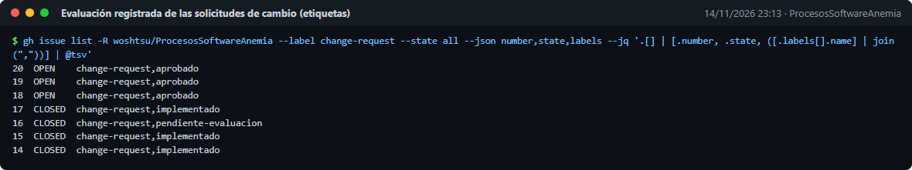
E-18. Evaluación formal de RFC (14/11, noche): #18, #19 y #20 con aprobado; #14, #15 y #17 con implementado (#16 cerrada como duplicado) (dominio 3).

E-19. GitFlow reanudado en develop: PR #28 (sync) y PR #29 (T-024) integradas; develop queda 0 detrás y 2 delante de main; ambas integradas con bypass admin (dominios 4 y 7).
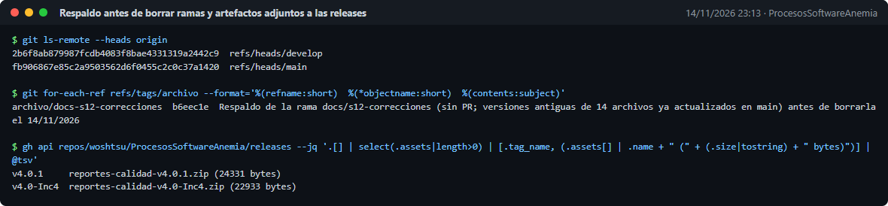
E-20. Limpieza de ramas y resguardo: solo main y develop remotas; etiqueta de respaldo archivo/docs-s12-correcciones; releases v4.0.1 y v4.0-Inc4 con artefactos adjuntos (dominios 7 y 11).

E-21. Nueva release v4.0.1 Latest en GitHub: notas de hotfix de rendimiento en Render y artefacto reportes-calidad-v4.0.1.zip adjunto (dominio 11).
Fuentes: repositorio woshtsu/ProcesosSoftwareAnemia (API de GitHub e historial de Git al 14/11/2026, 23:00), guía de laboratorio «Gestión de configuración de software (Unidad IV)», formato del cuadro PDCA de la semana 13 y CONTRIBUTING.md. Las fechas posteriores al 14/11/2026 son compromisos del equipo. Marco: ciclo PHVA según Torres Saumeth et al. (2013).